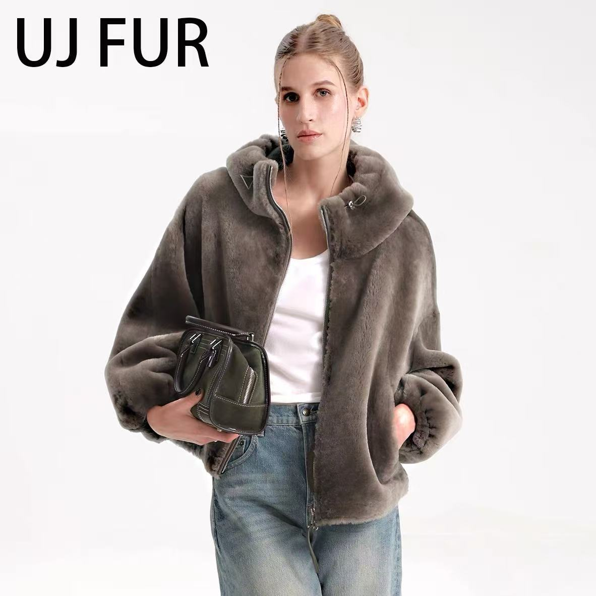
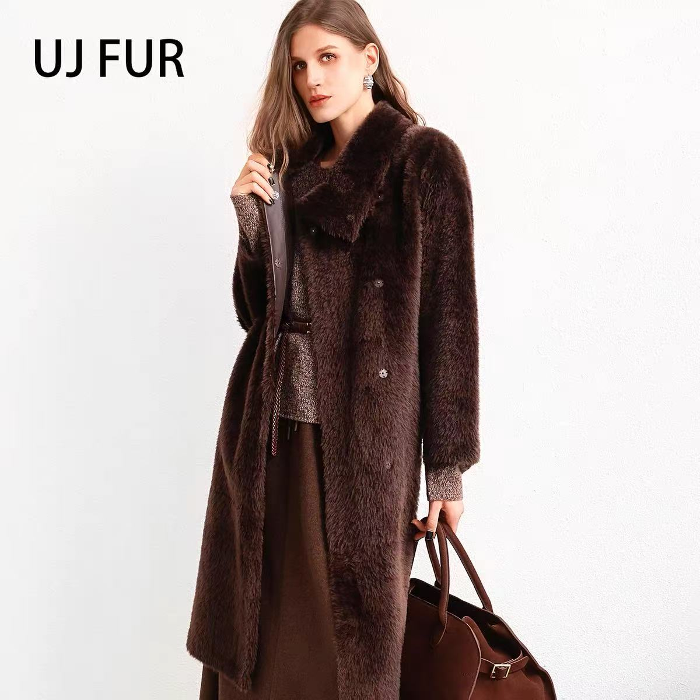
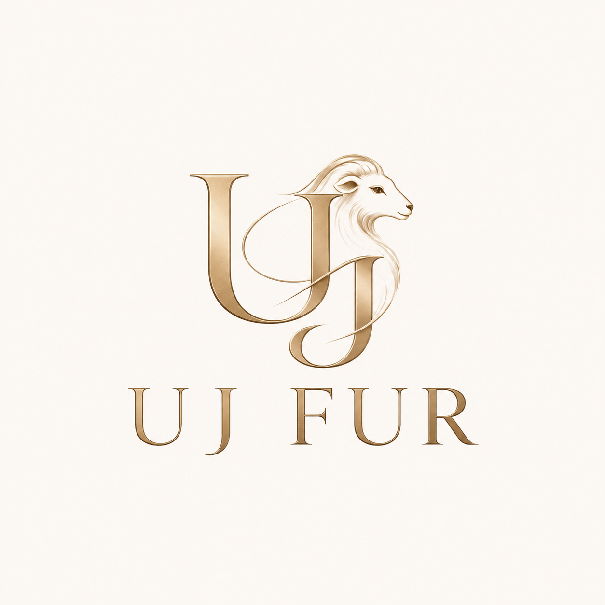
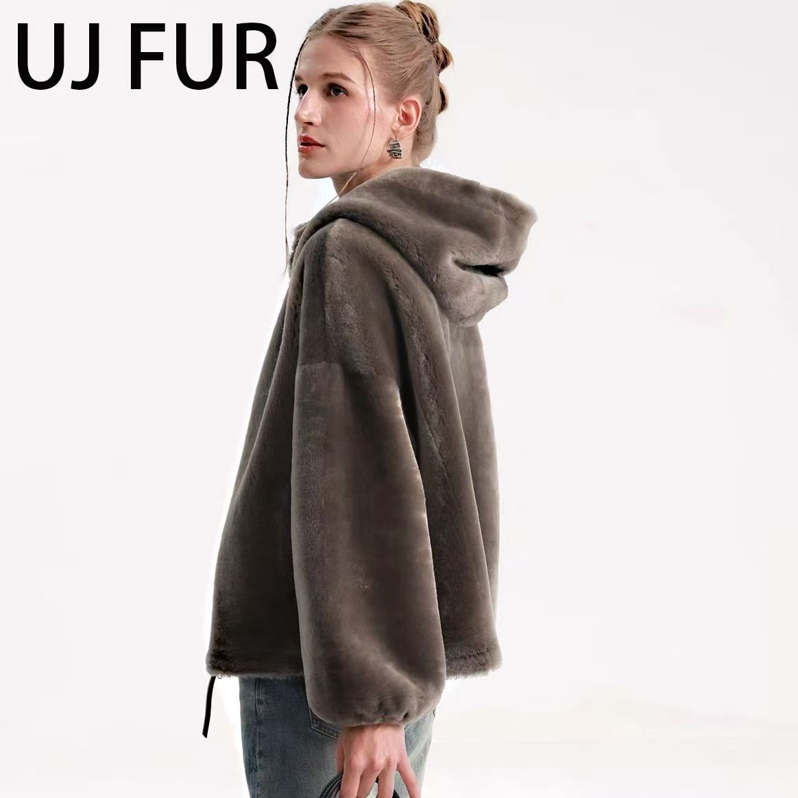
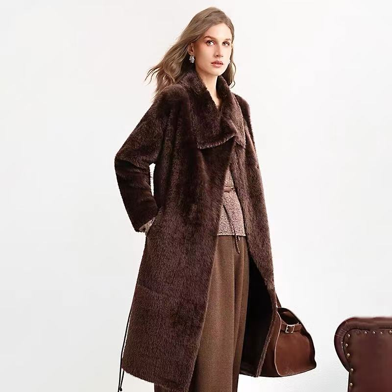
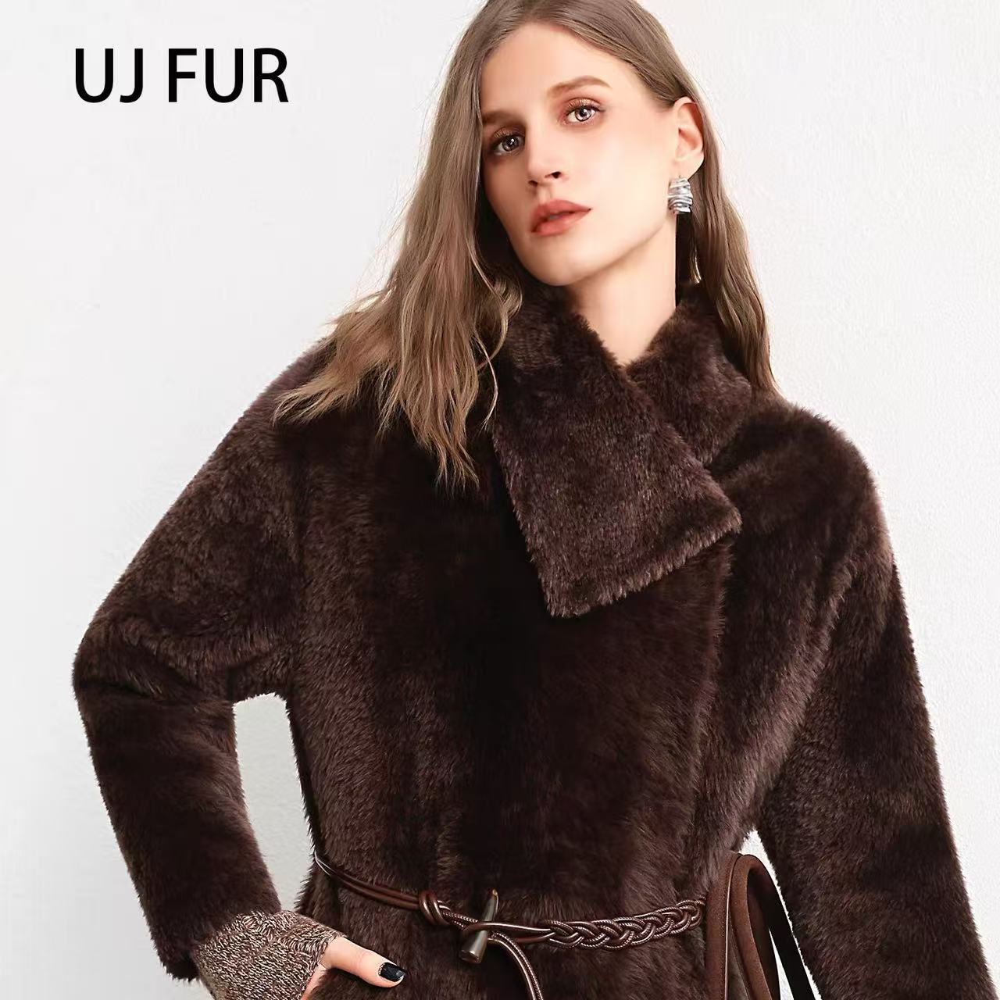

0105 · HERITAGE
十二年，持续向前。



01 · COLLECTION
为当代女性打造的轻盈冬日衣橱。

01
02
02 · MATERIAL FOCUS
Lacon 的珍贵，在于它将温度、轻盈与柔软融于一体。短而细密的绒毛，配合轻薄柔韧的皮板，带来细腻触感与自然垂坠。
轻薄皮板，减少传统冬装的负担感
短、细、柔软的绒面触感
自然垂坠，随身体自在流动
03 · MATERIAL LIBRARY
不同材质，不同的冬日表达。
01
低调而精致的轻盈奢华
02
饱满而富有轮廓
03
鲜明而富有戏剧感
04 · OUR DIFFERENCE
国际高端原料，结合中国成熟的皮革制造能力与更直接的供应链，让产品价值回归材料与制作本身。
甄选 Lacon、Merino 与 Toscana 等高端原料
扎根中国重要皮革产业集群——河北辛集
减少不必要的渠道层级，更贴近消费者
05 · HERITAGE

06 · FIT & SIZE
宽松版型 · 单位：厘米
手工测量可能存在 2–4 厘米误差。尺码仅供参考，欢迎邮件咨询个性化建议。